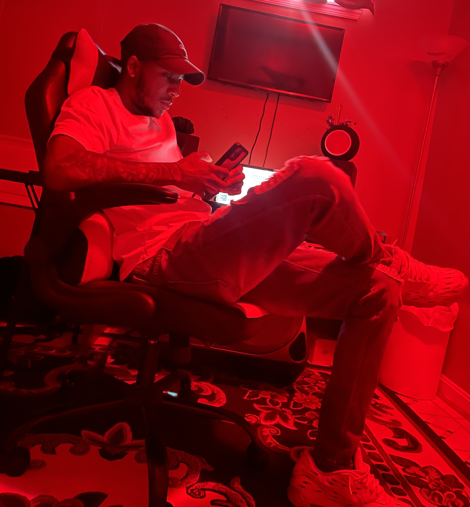

BIO
 Anthony (1$hot) Thomas is a producer, Dj, and audio engineer hailing from Maryland. He graduated from Bowie State University with a bachelor’s in Business Administration. Growing up, Anthony was in bands and played percussion this sparked his love for music and his desire to create his own music. This inspired him to become a music producer. He has experience that includes recording, producing beats, shooting and editing music videos, and Dj'd at parties for some artists. Genres he proficiently uses are hip hop, Trap, and R&B.